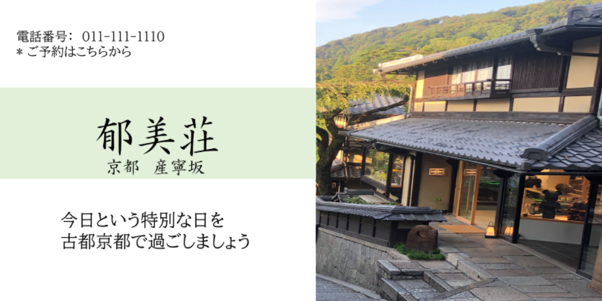

カテゴリ
MyPage
ログイン
【オンラインツアー】Virtul Trip（VR旅行も！）
圧倒的な没入感のオンラインツアー！
360度の景色を見わたせるVR（バーチャル）旅行を体験しましょう。
おともだちと家族とワイワイいっしょに観光地めぐり！

«
»
配信者を探す
サービス内容
「 オンラインツアー 」はスマホ＋スマホ用VRゴーグルで見ることができます。
交通や移動の手間がなく、料金も安い ため気軽に参加することができます。
オンラインツアー体験は、他では味わえない圧倒的な没入感により、忘れられない思い出となることでしょう!